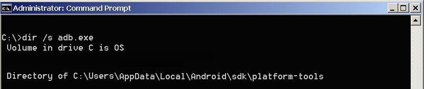
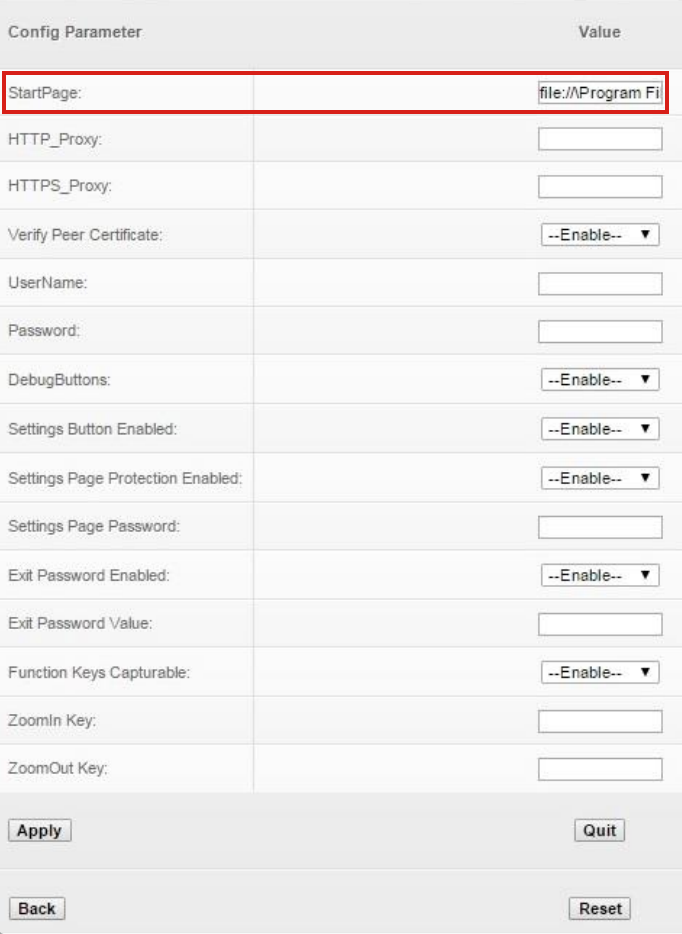
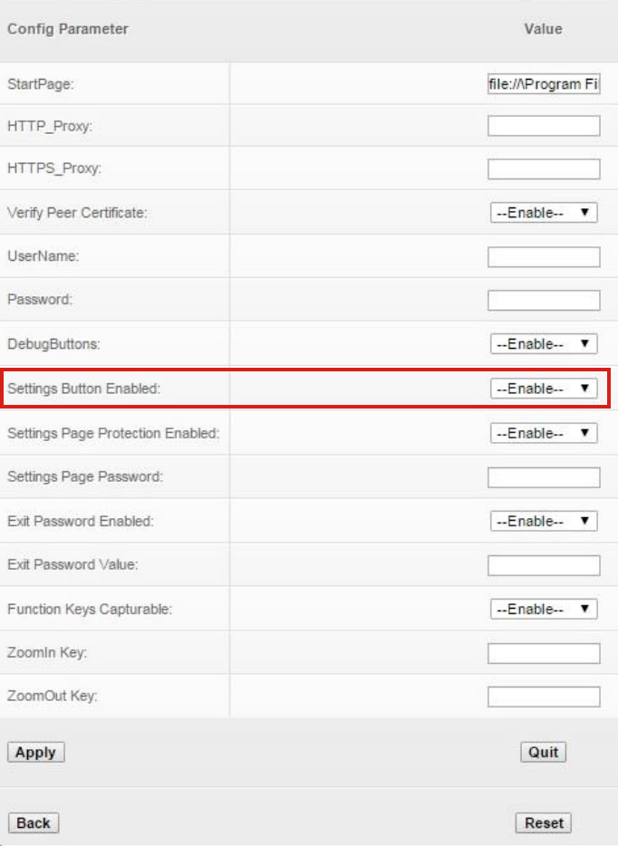

Overview
Installing Enterprise Browser development tools on a desktop or laptop system provides all the software necessary to start making Enterprise Browser apps. Deploying apps requires a connection via Android Debug Bridge (ADB) to one or more supported Zebra devices running Android. See the Prerequisites section for more info.
Developer Requirements
Building Enterprise Browser apps and configuration files requires the following:
- A computer running Windows XP, 7, 8 or 10
- The Enterprise Browser dev. kit (
.msifile) from the Zebra Support Portal - One or more supported Zebra devices connected to the computer
- USB driver for targeting Zebra devices installed
- Android Developer Tools installed and running
See Connections section for details
Other device updates might be required for compatibility with EB 3.3. See compatibility matrix.
Administrator Requirements
Deploying Enterprise Browser apps and/or configuration files requires the following:
- A Windows computer with Zebra StageNow tools installed
- An Enterprise Mobility Management (EMM) system (optional)
- An Enterprise Browser 3.3
.apkdownloaded from Google Play or the Zebra Support Portal - For manual deployment directly to individual device(s) ONLY:
- One or more supported Zebra devices connected to the computer
- USB driver for targeting Zebra devices installed
- Android Developer Tools installed and running
See Connections section for details
Optional Settings Files
Settings are stored in separate files for each of the optional EB features listed below. For each optional feature used in an app, a settings file is created by the developer to contain settings for that feature. Each such settings file must be present on the device and its location referenced in the app's Config.xml file.
Optional EB Features:
- Keycode mapping
- Shortcuts
- DOM injection
- Native tabbar
- Custom CSS
- ButtonBar
- Page-based Actions
Click each option for more information.
I. Prep Host and Target
From a Windows host
On Windows host systems, communication from the host to target device(s) is handled by the Android Debug Bridge (adb) for Android. If the device isn't visible to Windows when connected via USB, refer to the Connections section.
Android Debug Bridge (adb) supports USB connections only.
Once a USB host-to-device connection has been established...
To install the Enterprise Browser runtime onto a device:
- Select Start -> Enterprise Browser for Android -> Enterprise Browser Installer to bring up the EB Installer. A window will appear similar to the image below:
 Click image to enlarge; ESC to exit.
Click image to enlarge; ESC to exit.
- Select the desired package (Android or Android SAP) to install. Information in the right-hand pane will vary according to the selection.
- Click "Deploy" and follow prompts.
Installation of EB runtime for Android is complete.
From a macOS Host
For macOS systems, the preferred deployment method for Enterprise Browser runtimes is with the Android File Transfer utility. If Android File Transfer (AFT) is already installed, skip to Step 5.
1. Visit the Android File Transfer page.
2. Download and open the Android File Transfer .dmg file.
3. Drag the Android File Transfer app into the Applications folder on the host Mac.
4. Plug in the target Zebra Android device and unlock the screen. The device file system should automatically appear on the Mac in a window similar to the image below (it's sometimes necessary to launch or re-launch the app manually).
5. Use AFT to copy the Enterprise Browser runtime for Android to internal "phone" storage, which is opened by default.
Storage buttons (red arrow) will be shown only if an additional storage card is present in the device.

All connected devices must be unlocked before any file transfers can be performed.
6. Using a file browser app on the device, navigate to and double-tap the .apk to unpackage its files and directories.
7. Restart the device to complete the installation.
Installation of EB runtime for Android is now complete.
Refer to the On-device Configuration guide for help configuring Enterprise Browser settings following installation.
II. Manual Deployment
The Enterprise Browser runtime can be individually pushed to devices from Windows or macOS machines and manually unpackaged on the device. After running the desired Enterprise Browser installer (.msi or .dmg) on the development host, perform the steps below as appropriate for the manual installation scenario. The Enterprise Browser runtime and app(s) also can be mass-deployed using Zebra StageNow or a compatible EMM system. See the Mass Deployment section.
Zebra recommends fully testing apps using the manual deployment process before mass deployment across an enterprise.
EB apps comprise a minimum of two files:
theApp.html - The HTML code that contains user interface, program logic and references to device-peripheral APIs (JavaScript)
Config.xml - Configuration and feature settings for the app
An additional settings file is required for each optional feature employed by the app (see Overview).
To manually push an EB app to a device:
Skip to Step X if the EB runtime has already been installed on the target device and the need is ONLY to deploy a new or updated app and its settings file(s).
1. Uninstall any prior version of Enterprise Browser, if present.
2. Download the Enterprise Browser .apk file from one of the sites below:
3. If installed from Google Play, skip to Step 4.
Select a. or b. below to install an .apk from the portal:
a. Use adb to install the app:
adb install [apk path]
b. ~OR~ using a file browser on the device, locate double-tap the .apk.
This creates the /enterprise/device/enterprisebrowser/ folder on the device and stores the Enterprise Browser executable there.
4. Push the app's .html and Config.xml files and optional settings files (if any, see Overview) to:
/enterprise/device/enterprisebrowser/
Directory names are case sensitive.
4. Relaunch EB to activate settings.
The EB app is ready to use.
III. Mass Deployment
The Enterprise Browser installer (.apk) , apps (.html) and configuration (.xml) files can be mass-deployed to devices across an enterprise with a compatible EMM system using the instructions in this section.
Enterprise Browser 3.3 Important Notes
- EB 3.3
.apkfiles are available from Google Play and the Zebra Support Portal. Files are identical. - New package name:
com.zebra.mdna.enterprisebrowser - Any previous EB version must be uninstalled before installing EB 3.3
- EB 3.3 targets Android API level 30, which enforces the following storage restrictions:
- External storage is no longer accessible, including SD Card and USB paths
config.xmlfiles must be re-deployed to/enterprise/device/enterprisebrowser- All other config files must also be stored in
/enterprise/device/enterprisebrowser - All references in existing
Config.xmlpointing to restricted storage locations must be modified to reflect path above
- Changes are required in all
Config.xmlfiles that reference any of EB's optional feature configuration files: - Other device updates might be required for compatibility with EB 3.3. See compatibility matrix.
To mass-deploy an EB 3.3 app:
Zebra recommends fully testing all apps before mass deployment across an enterprise.
1. Uninstall any prior version of Enterprise Browser, if present.
2. Download the Enterprise Browser .apk file from one of the sites below:
3. Copy the .apk file to the EMM system, push it to the device and install it.
4. Copy the app's .html, Config.xml and any config file(s) of optional EB features to:
/enterprise/device/enterprisebrowseron the device.
Directory names are case sensitive.
6. Relaunch EB to activate settings.
If deploying config files, it's critical that the EMM be configured to execute Step 3 prior to Step 4 for the config files to be activated.
Connections
Android devices
Requirements for using the Enterprise Browser Installer on a Windows system to target an Android device:
- USB drivers for the specific hardware device being targeted
- The Android ADT bundle to make devices visible and to push files (includes adb)
- A path to
adb.exein the host system's environment variable
STEP 1: Get USB drivers
Visit the Zebra Support Portal, download and install the latest driver from the list.
For non-Zebra hardware, visit Google’s OEM USB Driver page for instructions and links to OEM drivers for the brand of device.
STEP 2: Get Android ADT
Visit the Android Developer Tools page, download and install the Android SDK to match the system (macOS, Linux or Windows 32/64).
STEP 3: Update system path
Add the full path to adb.exe to the system path. The EB installer and its utilities use adb to push files to Android devices. Since its location could vary with any given system, the path to adb.exe must be available system-wide so that EB can simply execute "abd.exe" rather than repeating the explicit path with every push function.
To add the platform-tools path to the system's environment variable:
- Right-click "Computer" and select -> Properties
- Select "Advanced System Settings" in the System Properties window
- In the "Advanced" tab, Click the "Environment Variables" button to bring up a window similar to the one below:

In the LOWER window, scroll down to "Path"
Select Path and click "Edit..." to bring up the path for editing
Add a semicolon (;) to the end of the line followed by the path to "abd.exe"
If unsure of the path, the following DOS command will reveal it:
c:\> dir /s adb.exe
This command should result in something like this:

If there's more than one path to adb.exe, enter the one that ends with
\platform-toolsThe correct string for this example would be
;C:\Users\AppData\Local\Android\sdk\platform-tools(notice the semicolon separator at the beginning of the line)Close the dialog and restart the system
To confirm that the path is correct, connect the device and run the following command:
$ adb devices
If everything is setup correctly, a display like the following will be seen:

The system is now ready to deploy Enterprise Browser apps to an Android device.
Launch Enterprise Browser
After installation and first launch, an Enterprise Browser app icon will appear in the all-apps section or "App Drawer" of Android devices and in the Main app menu on Windows Mobile/CE. Versions prior to Enterprise Browser 1.5 launch with default runtime settings as defined in the Config.xml file on the device. Enterprise Browser 1.5 and later can be launched with a pre-configured Config.xml file and optionally a pre-configured keycodemapping.xml file. See the Config.xml Reference for information about configuring the Config.xml file.
With default settings, the startup screen appears similar to the image below:
 Click image to enlarge; ESC to close.
Click image to enlarge; ESC to close.
Press the "Return to OS" button to skip settings configuration and bring up the operating system. To display the Settings button again, simply relaunch the Enterprise Browser app.
Press the "Settings" button to edit the on-device Config.xml file. A screen appears like the image below:

Click image to enlarge; ESC to close.
Setting the start page
To activate an EB app's start page, enter the URL in the Value field of the StartPage parameter, as highlighted above, but do not apply the changes yet. Applying changes immediately will cause the new start page to be displayed next time EB is launched and will remove access to the Settings panel.
WARNING: Free-form text fields such as "username" and "password" can accept alpha-numeric characters only. Entering non-text characters (< > \ / " ') in these fields (except in a URL field) will corrupt the Config.xml file.
If on-device access to runtime settings is desired after setting up the start page (for example, to experiment with various settings before deployment), set the SettingsButtonEnabled parameter to "Enable" (as below). This will cause a Settings button to appear in the UI at all times. Passwords also can be set here, if desired.

Click image to enlarge; ESC to close.
Press "Apply" to update the Config.xml file with the new settings. A screen like the one below will be displayed. Restart the app to activate the changes.
 Click image to enlarge; ESC to close.
Click image to enlarge; ESC to close.
The Settings button, if enabled, appears in the UI like the one in the red box below.
 Click image to enlarge; ESC to close.
Click image to enlarge; ESC to close.
WARNING: Free-form text fields such as "username" and "password" can accept alpha-numeric characters only. Entering non-text characters (< > \ / " ') in these fields (except in a URL field) will corrupt the Config.xml file.
The on-device settings panel provides access to just a small subset of Enterprise Browser runtime settings. For access to all settings, please refer to the On-device Configuration guide.